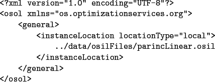

Generally, when solving a problem locally the user will use the solve service method. The solve method is invoked synchronously and waits for the solver to return the result. This is illustrated in Figure 16. As illustrated, the OSSolverService reads a file on the hard drive with the optimization instance, usually in OSiL format. The optimization instance is parsed into a string which is passed to the OSLibrary which is linked with various solvers. The result of the optimization is passed back to the OSSolverService as a string in OSrL format.
Here is an example of using a configure file, testlocal.config, to invoke Ipopt locally using the solve command.
-osil ../data/osilFiles/parincQuadratic.osil -solver ipopt -serviceMethod solve -browser /Applications/Firefox.app/Contents/MacOS/firefox -osrl /Users/kmartin/temp/test.osrl
The first line of testlocal.config gives the local location of the OSiL file, parincQuadratic.osil, that contains the problem instance. The second parameter, -solver ipopt, is the solver to be invoked, in this case COIN-OR Ipopt. The third parameter -serviceMethod solve is not really needed, but included only for illustration. The default solver service is solve. The fourth parameter is the location of the browser on the local machine. It will read the OSrL file on the local machine using the path specified by the value of the osrl parameter, in this case /Users/kmartin/temp/test.osrl.
Parameters may also be contained in an XML-file in OSoL format. In the configuration file testlocalosol.config we illustrate specifying the instance location in an OSoL file.
-osol ../data/osolFiles/demo.osol -solver clpThe file demo.osol is
